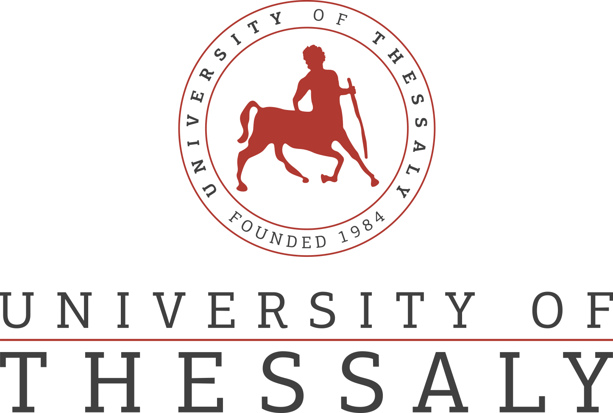
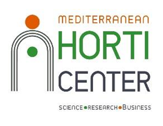

FOOD / HEALTH
FOOD / HEALTHFoodOxys
Personalised nutritional wellbeing, antioxidant and genetic profiles, and testing of foods and supplements.

Vice-Rector of Research, Innovation, Digital Governance and Lifelong Education · University of Thessaly

Professor Laspidou joins the Greek delegation at Slush 2026 to build connections between the University of Thessaly's innovation ecosystem and international founders, investors, industry and research partners. One Planet Thessaly supports the University's innovation, technology transfer and entrepreneurship activities.
FOOD / HEALTHPersonalised nutritional wellbeing, antioxidant and genetic profiles, and testing of foods and supplements.

HORTICULTUREResearch and services for greenhouse systems, crop production monitoring and horticultural investments.
 CIRCULAR FOOD SYSTEMS
CIRCULAR FOOD SYSTEMSFunctional foods, nutraceuticals and cosmetics developed from value-added agri-food by-products.
 AI / SMART AGRICULTURE
AI / SMART AGRICULTUREAI, connected sensors, cloud and edge computing for smarter, data-informed agrifood systems.
Potential discussion areas: venture introductions, applied research, industrial pilots, technology transfer and collaboration. No company-specific funding requests or investment terms are represented as confirmed.
Contact the Vice-Rector's Office and mention Slush 2026 and your area of interest.